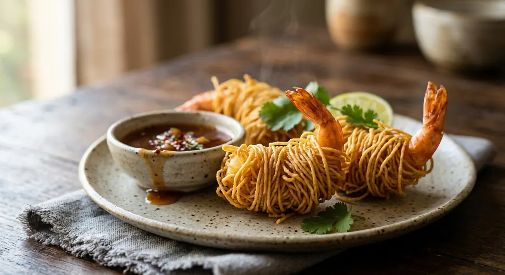

The royal court snack in one bite: a sweet prawn marinated in the three friends — coriander root, garlic, white pepper — wrapped in fine mee sua threads and fried until the sarong turns to gold.

The name does all the work. โสร่ง (sarong) is the wrapped garment of everyday Southeast Asia — and here the garment is made of noodles: fine mee sua threads wound round a marinated prawn, fried until they set into a crisp golden sheath. Strip the name and the dish loses its poetry; the Thai name is the recipe's description.
The dish belongs to the old royal snack table (อาหารว่างชาววัง). Kapook traces it back to the original สร่ง — seasoned pork (หมูสร่ง) or chicken wound in the same noodle sarong — and the prawn version is the later, lighter refinement: the same craft, but with the clean sweetness and bounce of fresh prawn in place of rich pork. Wongnai's recipe, made with chef Gino, frames it as court food any home cook can pull off — the ingredients are ordinary; the work is in the wrapping.
The craft, in fact, is the dish. The seasoning is deliberately lean — coriander root, garlic, white pepper, salt — because the prawn must taste of prawn and the noodle of crispness. The kitchen technique sits in three small steps the sources all insist on: score the prawn's belly so it fries straight, wrap the threads snug but not strangling, and rest the wrap until it is dry before it meets the oil. Get those three right and the sarong crackles; miss them and it is just another battered prawn.
| Thai | English | Amount |
|---|---|---|
| กุ้งสด | Large raw prawns | 10–12 |
| เส้นหมี่ซั่ว | Mee sua (thin wheat vermicelli) | 30–50 g |
| รากผักชี | Coriander roots | 1–2 |
| กระเทียม | Garlic cloves | 2 |
| พริกไทยป่น | Ground white pepper | 1 tsp |
| เกลือป่น | Salt | 1–2 tsp |
| ซีอิ๊วขาว | Light soy sauce (optional) | 1–2 tsp |
| น้ำตาลทราย | Sugar (optional) | 1 tsp |
| ไข่ | Eggs, beaten — for the noodle dip | 2–3 |
| น้ำมันพืช | Vegetable oil, for deep-frying | as needed |
Tamarind dip (Kapook's classic, น้ำจิ้มมะขาม): 40 ml wet tamarind paste, 125 ml water, 75 g palm sugar, 25 g white sugar, 1 tsp salt, 2 tsp fish sauce — simmer together, stirring, until the sugars dissolve and the dip thickens slightly; cool before serving. Plum-calamansi dip (Wongnai): 200 g plum sauce, 100 g sweet chicken dipping sauce, 50 g chilli sauce, 2 tsp salt, 2 tbsp lime juice, the juice of 2 calamansi, 2 tsp grated calamansi zest, 1 tsp chilli flakes — stir, taste for sour-sweet-salty-hot, finish with the zest and toasted sesame. Spring-roll dip and Sriracha: Kapook's second recipe cooks sugar, vinegar and salt with pounded garlic and chilli, then shredded carrot and radish; Golden Mountain simply serves the prawns with Sriracha.
The noodle. Kapook, Wongnai and Seagull wrap in เส้นหมี่ซั่ว, the thin wheat threads (Phuket mee sua is the named favourite). Golden Mountain uses plain rice vermicelli (เส้นหมี่). Phol Food Mafia goes furthest: half-cooked capellini pasta, deliberately boiled for only half its packet time so it stays dry enough to crisp. All three roads lead to the same golden cage, but the threads are different.
Making the wrap stick. Kapook dips the soaked strands in beaten egg — grip, colour and extra crunch. Phol Food Mafia dusts the prawns with plain flour instead. Wongnai and Golden Mountain wrap bare, trusting dry threads and snug winding. The disagreement is honest: every cook fights the same problem, and picks a different glue.
The dip. The widest split in the dish. Kapook gives three: tamarind dip, spring-roll dip, and the plum-calamansi mix. Wongnai stops at the plum-calamansi mix. Golden Mountain reaches for Sriracha. Phol Food Mafia serves ajad — the vinegar-pickle relish of cucumber, shallot and chilli. There is no canonical sauce; there is a canonical rule (sour-sweet-hot against salty-crisp) and each kitchen dresses it differently.
The fry. Most sources say medium to medium-high oil and a golden colour. Phol Food Mafia specifies 160°C. Seagull skips the wok entirely for an air fryer at 180°C. The shared bottom line: hot oil, dry wrap, small batches.
The spelling. Kapook titles the dish กุ้งสร่ง — the older สร่ง form, without the เ — while Wongnai, Seagull and the rest write กุ้งโสร่ง. Both names are in circulation; โสร่ง, the sarong garment itself, is the word the dish was named after.
This recipe is translated from the following Thai-language sources. Where they disagree, we've said so.
1. Kapook Cooking — "กุ้งสร่ง เมนูของว่างไทยโบราณตำรับชาววัง" (the recipe used here; three dipping sauces) — cooking.kapook.com
2. Wongnai — "กุ้งโสร่ง เมนูชาววังสุดเป๊ะ กุ้งเด้งเนื้อกรอบเกินต้าน" with chef Gino (the plum-calamansi dip) — wongnai.com
3. Phol Food Mafia — "Saroeg Prawns (กุ้งโสร่ง)" (the capellini version; 160°C fry; ajad relish) — pholfoodmafia.com
4. Golden Mountain Sauce — "กุ้งโสร่ง" (the rice-vermicelli version; Sriracha) — goldenmountainsauce.com
5. Seagull Brand — "กุ้งโสร่ง จากหม้อทอดกรอบไร้น้ำมัน" (the air-fryer version, 180°C) — seagull-brand.com